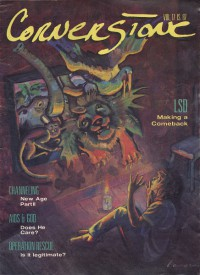

CMnexus
:
Contemporary Christian culture, music, and media.
Magazines
Profiles
Dove Awards
cmnexus.org
CM
nexus
→
Magazine list
→
Cornerstone
→
Issues
Cornerstone
1988, vol. 17, iss. 87
< -- Prev
Issue list
Next -- >
Cover

Writers in this Issue
Mark Jaquette
Ross Pavlac
Chris Ramsey
Tony Shore
Jon Trott
Article:
Valeri Barinov
by Chris Ramsey
Interview:
Midnight Oil
by Jon Trott
Cinderella
by Chris Ramsey
Illustrator
by Jon Trott
Album Review:
Resurrection Band
-
Silence Screams
by Tony Shore
U2
-
Rattle and Hum
by Jon Trott
Amy Grant
-
Lead Me On
by Jon Trott
Charlie Peacock
-
West Coast Diaries Volume I
by Jon Trott
The Swirling Eddies
-
Let's Spin
by Jon Trott
Phil Keaggy
-
Phil Keaggy and Sunday's Child
by Jon Trott
Ladysmith Black Mambazo
-
Journey of Dreams
by Jon Trott
Sam Phillips
-
The Indescribable WOW
by Mark Jaquette
The Crossing
-
Look Both Ways
by Ross Pavlac
Mike Stand
-
Do I Stand Alone?
by Jon Trott
78 RPM:
Randy Stonehill
-
Can't Buy A Miracle
The Crucified
-
Nailed
Black Carnation
-
Children of the Revolution
The Lonely Now
-
Original Intentions
Tanzen
-
Piece By Peace
Stevie & The Saints
-
Metal Blue
Godarchy:
David Joo
in a Car accident, publication of zines has stopped
Relevant Links
Official web site of Cornerstone
You may be able to find
Cornerstone
in a library near you:
check
Worldcat
< -- Prev
Issue list
Next -- >
CMnexus
(noun)
The magazine index
of modern music
and Christianity
© 2011 CMnexus. Last updated August 2025.
Contact:
Rants and other correspondence to:
editor -AT- cmnexus
-DØT- org
About